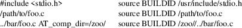

debuginfod-find − request debuginfo-related data
debuginfod-find
[OPTION]... debuginfo BUILDID
debuginfod-find [OPTION]... debuginfo
PATH
debuginfod-find [OPTION]... executable
BUILDID
debuginfod-find [OPTION]... executable
PATH
debuginfod-find [OPTION]... source
BUILDID /FILENAME
debuginfod-find [OPTION]... source PATH
/FILENAME
debuginfod-find queries one or more debuginfod servers for debuginfo-related data. In case of a match, it saves the the requested file into a local cache, prints the file name to standard output, and exits with a success status of 0. In case of any error, it exits with a failure status and an error message to standard error.
The debuginfod system uses buildids to identify debuginfo-related data. These are stored as binary notes in ELF/DWARF files, and are represented as lowercase hexadecimal. For example, for a program /bin/ls, look at the ELF note GNU_BUILD_ID:
% readelf -n
/bin/ls | grep -A4 build.id
Note section [ 4] ’.note.gnu.buildid’ of 36
bytes at offset 0x340:
Owner Data size Type
GNU 20 GNU_BUILD_ID
Build ID: 8713b9c3fb8a720137a4a08b325905c7aaf8429d
Then the hexadecimal BUILDID is simply:
8713b9c3fb8a720137a4a08b325905c7aaf8429d
In place of the hexadecimal BUILDID, debuginfod-find also accepts a path name to to an ELF binary, from which it extracts the buildid. In this case, ensure the file name has some character other than [0-9a-f]. Files ambiguously named files like "deadbeef" can be passed with a ./deadbeef extra path component.
debuginfo
BUILDID
If the given buildid is known to a server, this request will
result in a binary object that contains the customary
.*debug_* sections. This may be a split debuginfo
file as created by strip, or it may be an original
unstripped executable.
executable
BUILDID
If the given buildid is known to the server, this request
will result in a binary object that contains the normal
executable segments. This may be a executable stripped by
strip, or it may be an original unstripped
executable. ET_DYN shared libraries are considered to
be a type of executable.
source
BUILDID /SOURCE/FILE
If the given buildid is known to the server, this request
will result in a binary object that contains the source file
mentioned. The path should be absolute. Relative path names
commonly appear in the DWARF file’s source directory,
but these paths are relative to individual compilation unit
AT_comp_dir paths, and yet an executable is made up of
multiple CUs. Therefore, to disambiguate, debuginfod expects
source queries to prefix relative path names with the CU
compilation-directory, followed by a mandatory
"/".
Note: for software packaged by distributions, the CU compilation-directory may not be obvious. It can be found by inspecting AT_comp_dir values in downloaded debuginfo. For example, the comp_dir of the Fedora 37 version of /bin/ls can be found as follows:
%
debuginfod-find debuginfo /bin/ls
~/.cache/debuginfod_client/03529d48345409576cd5c82a56ad08555088d353/
% eu-readelf -w
~/.cache/debuginfod_client/03529d48345409576cd5c82a56ad08555088d353/debuginfo
| grep comp_dir
comp_dir (line_strp)
"/usr/src/debug/coreutils-9.1-6.fc37.x86_64/separate"
Note: the caller may or may not elide ../ or /./ or extraneous /// sorts of path components in the directory names. debuginfod accepts both forms. Specifically, debuginfod canonicalizes path names according to RFC3986 section 5.2.4 (Remove Dot Segments), plus reducing any // to / in the path.
For example:

|
−v |
Increase verbosity, including printing frequent download-progress messages and printing the http response headers from the server. |
debuginfod-find does not include any particular security features. It trusts that the binaries returned by the debuginfod(s) are accurate. Therefore, the list of servers should include only trustworthy ones. If accessed across HTTP rather than HTTPS, the network should be trustworthy. Authentication information through the internal libcurl library is not currently enabled, except for the basic plaintext http[s]://userid:password@hostname/ style. (The debuginfod server does not perform authentication, but a front-end proxy server could.)
debuginfod(8) debuginfod_find_debuginfod(3)